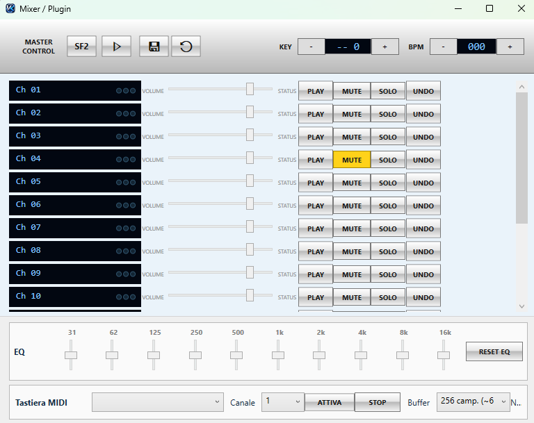

Solo Professional
Banco Suoni Professional
Il Banco Suoni Pro è un pacchetto scaricabile separatamente per migliorare la resa dei file MIDI e KAR compatibili con il motore SoundFont di Vegas Karaoke Player.

Informazioni importanti
Licenza Professional
Il pacchetto è destinato agli utenti che possiedono la versione Professional.
MIDI e KAR
Serve per migliorare la riproduzione dei brani MIDI/KAR usando il motore SoundFont.
Download separato
Il banco suoni viene distribuito come file dedicato, separato dall'installer principale.